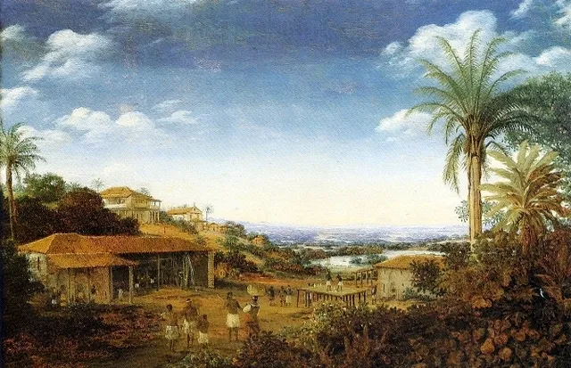

Durante o Período Colonial no Brasil, o açúcar foi um produto de grande importância econômica para o Império Português. Cuba e Porto Rico emergiram como concorrentes significativas na produção de açúcar, ambas dominadas por plantações e engenhos, muitos operados por escravos africanos.
A competição entre essas colônias resultou em flutuações nos preços do açúcar no mercado internacional. O cultivo intensivo de cana-de-açúcar demandou uma grande quantidade de mão de obra escrava, apresentando desafios para os ideais liberais ao criar debates sobre a coerência entre os princípios proclamados e a realidade brutal das colônias.
O sistema escravista negava aos escravizados os direitos individuais fundamentais, como liberdade, propriedade e busca pela felicidade, todos valores caros ao liberalismo. A exploração brutal e as condições desumanas de trabalho nas plantações de açúcar eram incompatíveis com a visão liberal de uma sociedade baseada na igualdade e no respeito pelos direitos individuais.